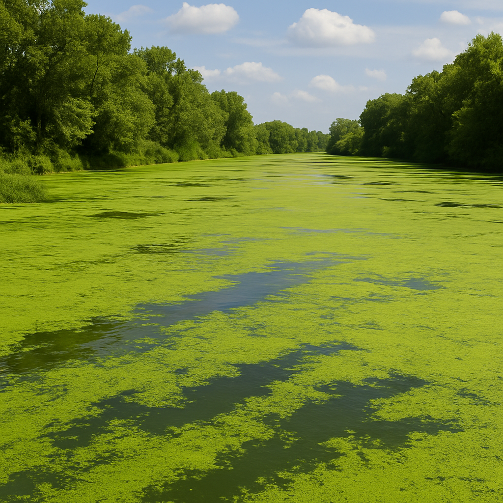
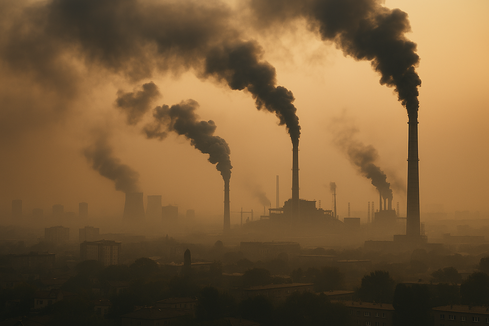
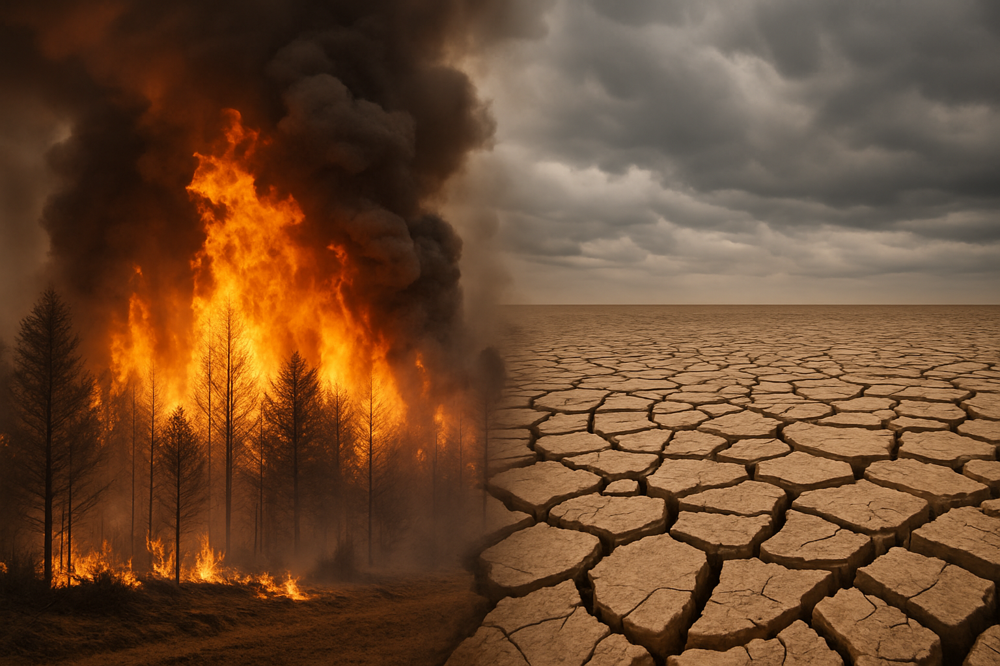

🍃
Impacto del Nitrógeno
El elemento que alimenta al mundo...
pero también lo contamina
El nitrógeno es fundamental para la vida en la Tierra, pero su uso excesivo está causando una de las crisis ambientales más silenciosas de nuestro tiempo.
Desde la revolución verde del siglo XX, la humanidad ha duplicado la cantidad de nitrógeno reactivo en el ambiente.
Principales efectos ambientales

Eutrofización
El exceso de nitrógeno en aguas causa proliferación de algas y zonas muertas.

Contaminación Atmosférica
Los óxidos de nitrógeno contribuyen al smog y la lluvia ácida.

Cambio Climático
El óxido nitroso es 300 veces más potente que el CO₂.
Datos que impactan
0
Millones de toneladas de N₂ añadidas anualmente
0
% de la población depende de fertilizantes sintéticos
0
Zonas muertas oceánicas identificadas
Soluciones para un futuro sostenible
- 🌱 Agricultura de precisión: Aplicar fertilizantes solo donde se necesitan
- 🦠 Biofertilizantes: Usar bacterias que fijan nitrógeno naturalmente
- 🔄 Rotación de cultivos: Alternar con leguminosas
- 💧 Tratamiento de agua: Eliminar nitratos antes de la descarga
- 🥗 Dietas sostenibles: Reducir productos intensivos en nitrógeno
¿Qué puedes hacer tú?
Cada acción cuenta para restablecer el equilibrio del nitrógeno en nuestro planeta.
Acciones Personales
- Consume productos orgánicos cuando sea posible
- Reduce el desperdicio de alimentos
- Apoya la agricultura local y sostenible
- Usa transporte público o bicicleta
- Participa en programas de compostaje
Iniciativas Globales
- Protocolo de Montreal para reducir N₂O
- Directiva de Nitratos de la Unión Europea
- Programas de agricultura sostenible de la FAO
- Investigación en nuevas tecnologías
- Políticas de economía circular